library(tidyverse)
movies <- read_csv("data/movies.csv")1 How to use this handout
The slides move fast. This handout is the slow, complete version: read it before class, and return to it when you audit a plot.
As in the earlier sessions, Audit it boxes show mistakes that an AI assistant (or a human) could easily make. For plots there is a new kind of mistake: the code runs without error, and the picture is still misleading.
NoteThe Audit Loop, for plots
- Read the code.
- Run it, and look at the plot with the data in mind.
- Restate what the plot claims in plain English.
- Refine it or Reject it: axis, sample sizes, order, color, labels.
Setup. Every example uses movies.csv (download). The packages come with tidyverse: ggplot2 (plots), forcats (ordering categories), and scales (axis labels).
2 Why plot at all?
Summaries compress a dataset into a few numbers. Different datasets can share the same numbers.
# anscombe is a small dataset that ships with R
anscombe_long <- anscombe |>
pivot_longer(everything(), names_to = c(".value", "set"), names_pattern = "(.)(.)")
anscombe_long |>
summarize(mean_x = mean(x), mean_y = mean(y), sd_y = sd(y), cor = cor(x, y), .by = set)#> # A tibble: 4 x 5
#> set mean_x mean_y sd_y cor
#> <chr> <dbl> <dbl> <dbl> <dbl>
#> 1 1 9 7.50 2.03 0.816
#> 2 2 9 7.50 2.03 0.816
#> 3 3 9 7.5 2.03 0.816
#> 4 4 9 7.50 2.03 0.817All four sets have the same means, nearly the same spread, and the same correlation (about 0.82). Now look:
ggplot(anscombe_long, aes(x, y)) +
geom_point(size = 2) +
geom_smooth(method = "lm", se = FALSE) +
facet_wrap(~ set, nrow = 1)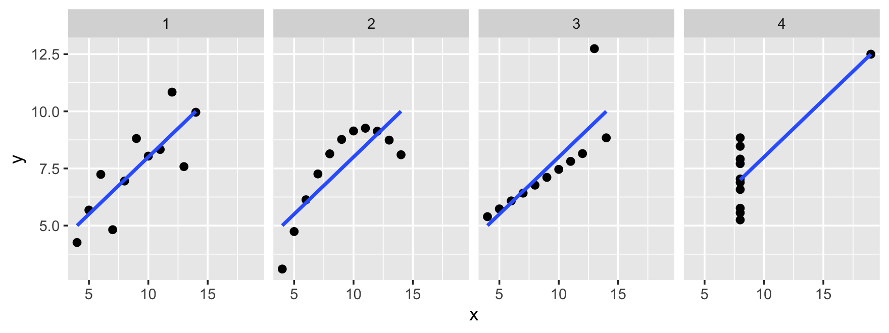
One is a clean line, one is a curve, one has an outlier, and one is vertical stripes with a single leverage point. The same straight-line summary is the right description of only the first.
TipKey idea
A plot is a test of a summary. Before you trust a mean, a correlation, or a model, plot the data it came from.
3 The grammar of graphics
ggplot2 builds a plot from independent pieces, joined with +:
| Piece | Question it answers | Examples |
|---|---|---|
| Data | Which table? | movies |
| Aesthetics | Which columns go where? | x, y, color, fill, size, shape, alpha |
| Geom | What shape is drawn? | geom_point(), geom_bar(), geom_line() |
| Scales | How do values map to positions and colors? | scale_x_log10(), scale_color_viridis_d() |
| Facets | One panel or many? | facet_wrap() |
| Labels and theme | How does it read? | labs(), theme_minimal() |
3.1 Build one plot, layer by layer
Start with the canvas: data and aesthetics only.
ggplot(movies, aes(x = imdb_rating, y = audience_score))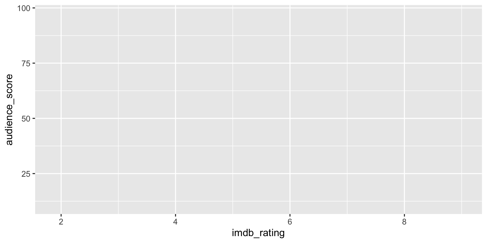
The axes exist because ggplot2 looked at the columns, but nothing is drawn. Add a geom:
ggplot(movies, aes(x = imdb_rating, y = audience_score)) +
geom_point()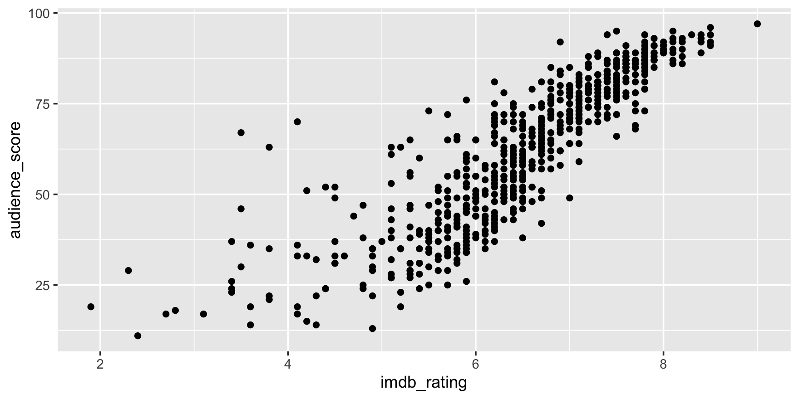
Add a second layer. Both layers inherit x and y from the first line.
ggplot(movies, aes(x = imdb_rating, y = audience_score)) +
geom_point(alpha = 0.5) +
geom_smooth(method = "lm", se = FALSE)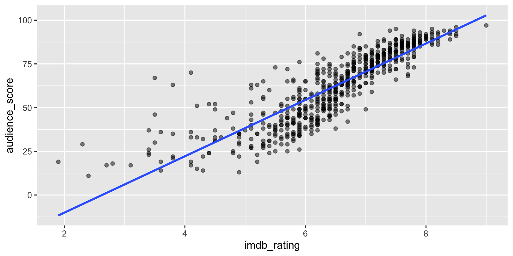
geom_smooth() fits a trend. method = "lm" is a straight line. The default (method = "loess") is a flexible curve. se = FALSE hides the uncertainty band; leave it on when you want to show how sure the trend is.
You can also write the data into the pipeline:
movies |>
ggplot(aes(x = imdb_rating, y = audience_score)) +
geom_point()
NotePipe, then plus
Inside a pipeline, the pipe |> passes data into ggplot(). After that, layers are joined with +. A common AI mistake is to use |> between layers (or + between data steps).
3.2 Mapping vs setting
This is the most important idea in the grammar.
- Inside
aes(): the property depends on the data. A legend is created. - Outside
aes(): one fixed value for every element. No legend.
# Mapped: color depends on a column
ggplot(movies, aes(x = imdb_rating, y = audience_score)) +
geom_point(aes(color = title_type))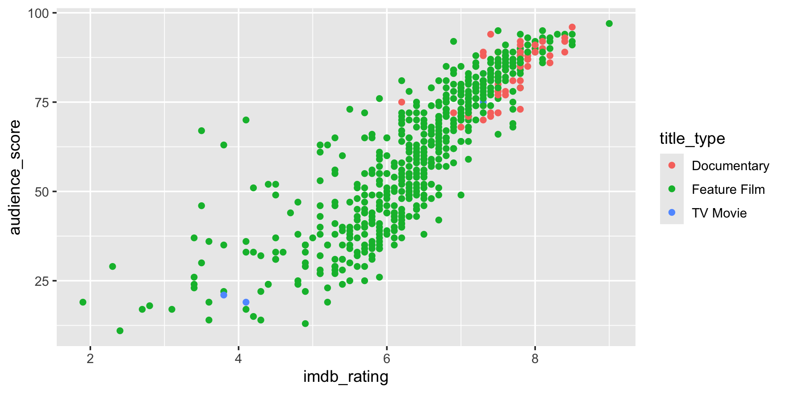
# Set: every point is the same fixed color, size, and transparency
ggplot(movies, aes(x = imdb_rating, y = audience_score)) +
geom_point(color = "#6d8d24", size = 2, alpha = 0.5)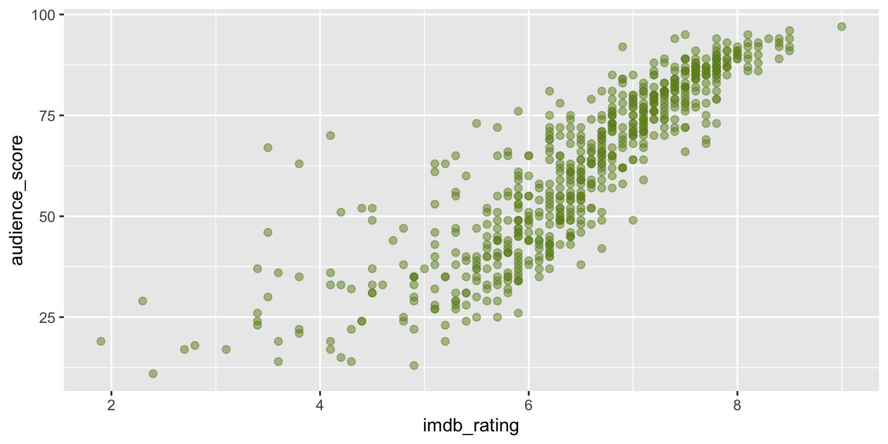
WarningAudit it: a color name inside aes()
ggplot(movies, aes(x = imdb_rating, y = audience_score)) +
geom_point(aes(color = "blue"))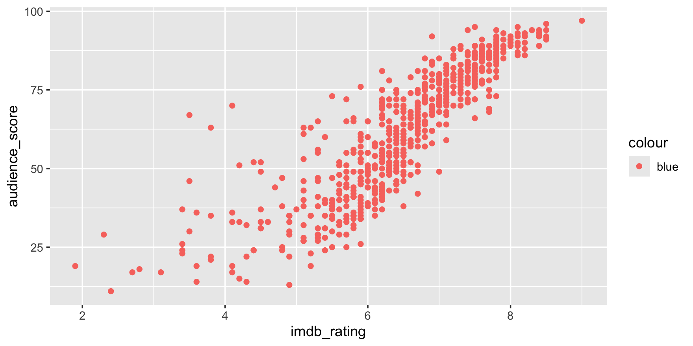
The points are not blue, and there is a legend entry called “blue”. Inside aes(), "blue" is just a text label for a (single) category, so ggplot2 assigns it the first default palette color. To get blue points, set the color outside aes(): geom_point(color = "blue").
3.3 Which aesthetic for which variable?
| Aesthetic | Works well for | Notes |
|---|---|---|
x, y (position) |
numbers, ordered categories | The most accurate encoding. Use it for what matters most. |
color |
a few categories, or a continuous gradient | Limit to about 5 categories |
fill |
the inside of bars, boxes, densities | color is the outline for these |
shape |
2 to 4 categories | Hard to read for more |
size |
a number, roughly | Readers compare sizes poorly |
alpha |
overlap, or a number | Transparency |
linetype |
a few categories of lines | |
group |
which points belong to the same line | Often needed with geom_line() |
TipKey idea
Put the variable that matters most on a position (x or y). Use color and size for secondary variables.
3.4 Plots are objects
Save a plot in a name and keep adding layers.
p <- ggplot(movies, aes(x = imdb_rating, y = audience_score)) +
geom_point(alpha = 0.5, color = "#6d8d24")
p + labs(title = "Audience scores track IMDB ratings")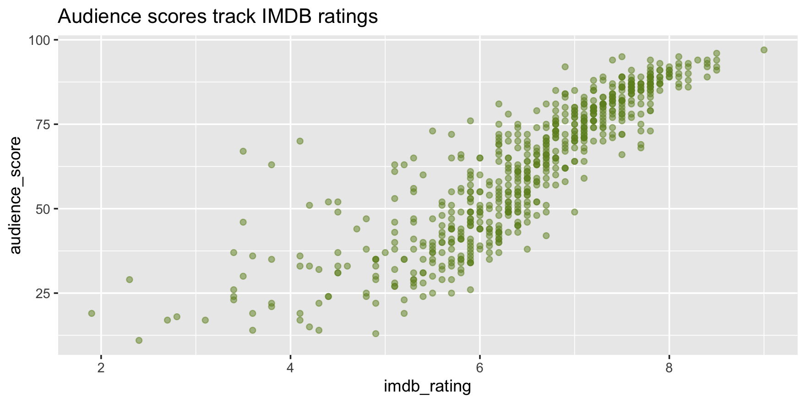
Nothing is displayed when you assign (p <- ...). Type p or add layers to see it. This is the best way to try several versions of a plot.
4 Choosing a geom from the question
Start from the question you want the plot to answer.
| Question | Geom |
|---|---|
| How is one number distributed? | geom_histogram(), geom_density(), geom_boxplot() |
| How does a number differ across groups? | geom_boxplot(), geom_jitter(), geom_col() of a summary |
| How many in each category? | geom_bar() (counts rows), geom_col() (uses a column) |
| How do two numbers relate? | geom_point(), geom_smooth() |
| How does a number change over time? | geom_line() |
4.1 One number: histograms and densities
ggplot(movies, aes(x = audience_score)) +
geom_histogram(binwidth = 5, fill = "#6d8d24", color = "white")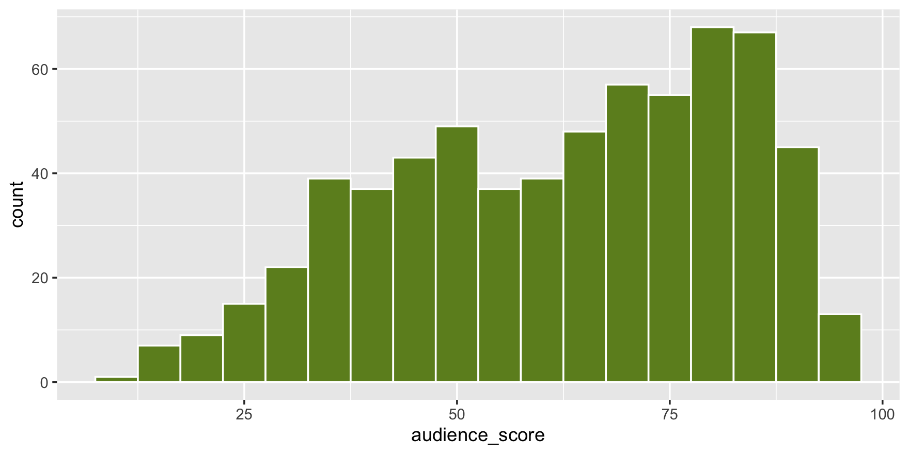
Each bar counts the movies in a bin. binwidth = 5 means a bin spans 5 points. The bin width is a choice that changes the look (see Section 6.3).
A density plot is a smoothed version, and it works well for comparing groups, as long as the fills are see-through:
ggplot(movies, aes(x = imdb_rating, fill = audience_rating)) +
geom_density(alpha = 0.5)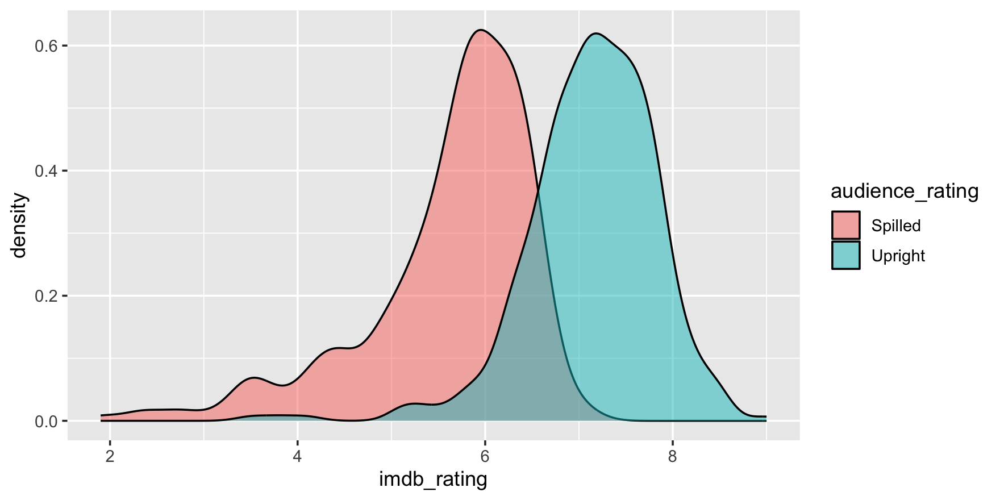
audience_rating is “Upright” (audience score at least 60) or “Spilled” (below 60).
4.2 A number across groups: boxplots
A boxplot shows the median (the line), the middle half of the data (the box), and the range with outliers (whiskers and dots).
ggplot(movies, aes(x = audience_score, y = genre)) +
geom_boxplot()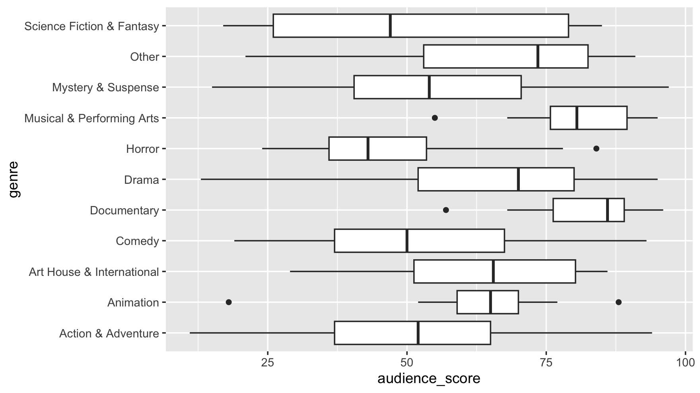
The categories are in alphabetical order, which carries no meaning. fct_reorder() sorts them by a summary of the number (the median, by default):
ggplot(movies, aes(x = audience_score, y = fct_reorder(genre, audience_score))) +
geom_boxplot() +
labs(y = NULL)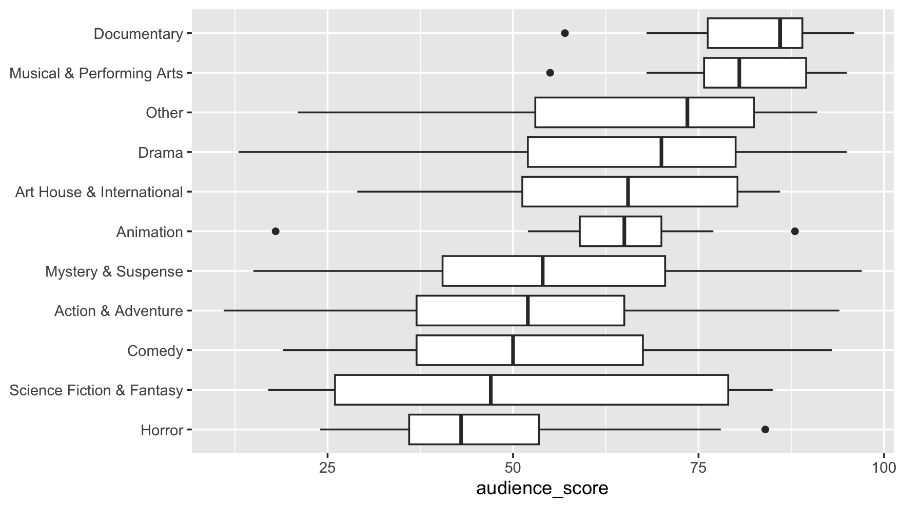
Putting the long category names on the y axis avoids the overlapping labels you get on a crowded x axis.
TipShow the points too
A boxplot hides group sizes. Adding geom_jitter() on top shows every observation, so a group with 9 movies cannot masquerade as one with 300.
ggplot(movies, aes(x = audience_score, y = fct_reorder(genre, audience_score))) +
geom_boxplot(outlier.shape = NA) +
geom_jitter(height = 0.2, alpha = 0.3) +
labs(y = NULL)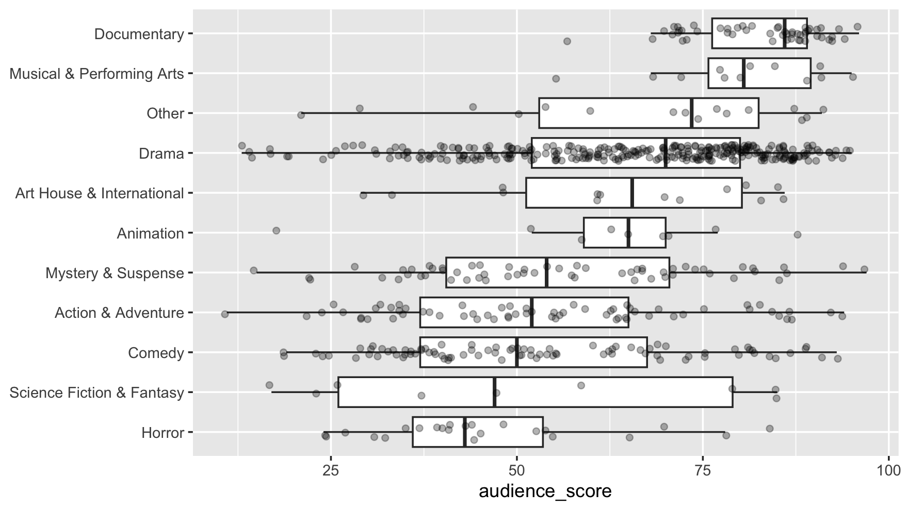
outlier.shape = NA hides the boxplot’s own outlier dots, because the jittered points already show them.
4.3 Counts: geom_bar() vs geom_col()
geom_bar() counts rows for you:
ggplot(movies, aes(y = fct_rev(fct_infreq(genre)))) +
geom_bar() +
labs(y = NULL)fct_infreq() orders categories by how often they occur, and fct_rev() flips the order so the biggest bar is on top.
If you already have the counts (or any summary) in a column, use geom_col():
genre_counts <- movies |> count(genre)
ggplot(genre_counts, aes(x = n, y = fct_reorder(genre, n))) +
geom_col() +
labs(y = NULL)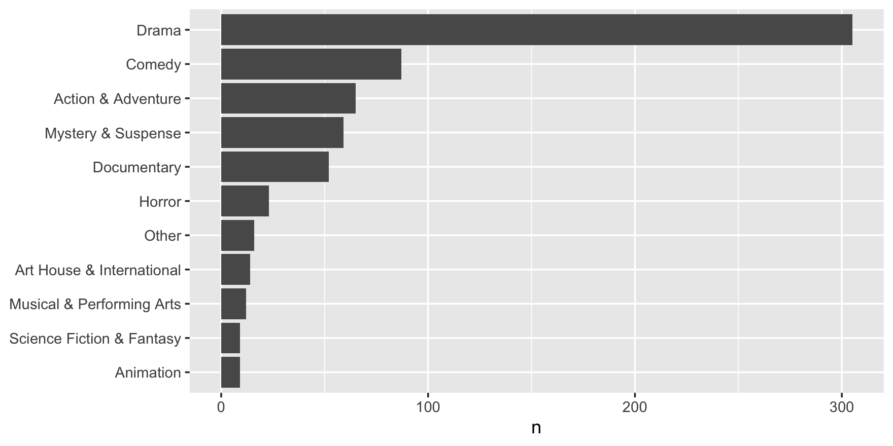
WarningAudit it: geom_bar() with a count column
ggplot(genre_counts, aes(x = n, y = genre)) +
geom_bar()#> Error in `geom_bar()`:
#> ! Problem while computing stat.
#> i Error occurred in the 1st layer.
#> Caused by error in `setup_params()`:
#> ! `stat_count()` must only have an x or y aesthetic.geom_bar() counts rows itself, so it refuses a variable already on the count axis. The fix is geom_col() (or geom_bar(stat = "identity"), the older spelling). The wording of the error message varies between versions of ggplot2.
4.4 Position: stacked, dodged, and filled bars
When bars are split by a second variable, position decides how:
ggplot(movies, aes(y = genre, fill = audience_rating)) +
geom_bar(position = "stack") + # the default: totals plus parts
labs(y = NULL, title = "stack")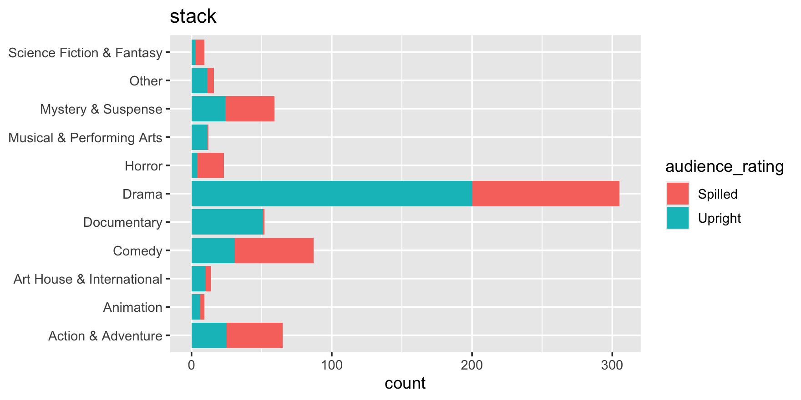
ggplot(movies, aes(y = genre, fill = audience_rating)) +
geom_bar(position = "dodge") + # side by side
labs(y = NULL, title = "dodge")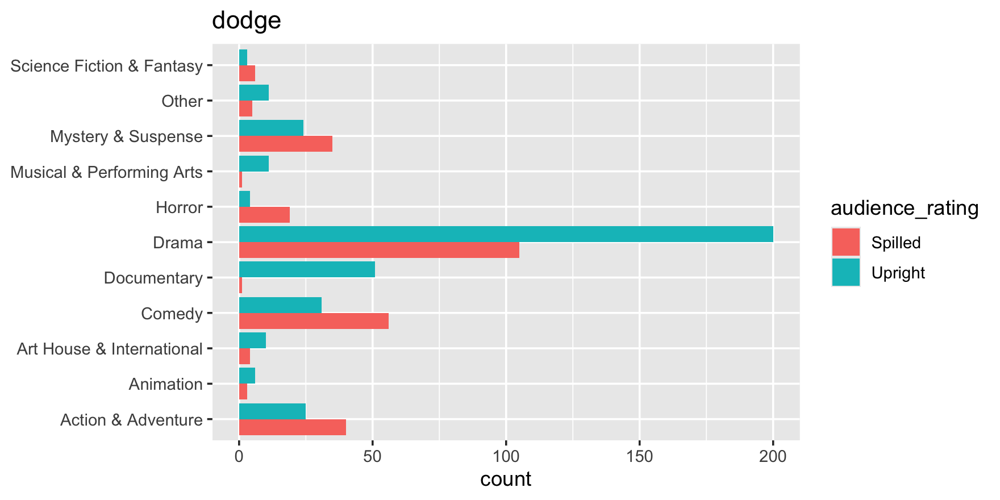
ggplot(movies, aes(y = genre, fill = audience_rating)) +
geom_bar(position = "fill") + # every bar rescaled to 100%
labs(x = "proportion", y = NULL, title = "fill")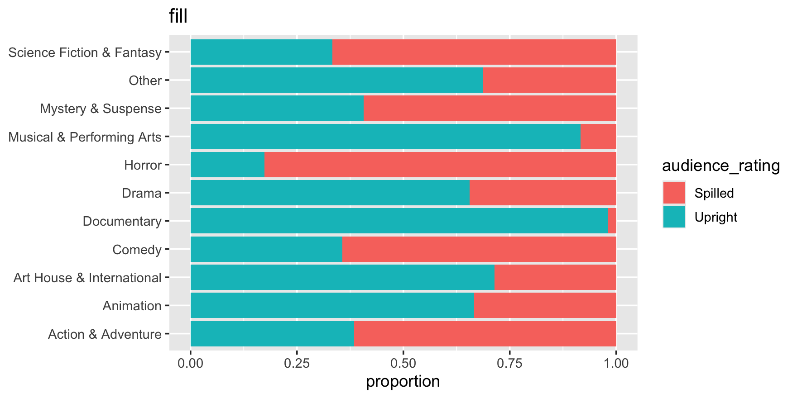
Use stack for totals, dodge to compare parts directly, and fill to compare shares. fill hides how big each group is, so say so or show n.
4.5 Two numbers: overplotting
When many points land on top of each other, density is hidden. Three fixes: transparency (alpha), jitter, or smaller points.
ggplot(movies, aes(x = mpaa_rating, y = audience_score)) +
geom_point()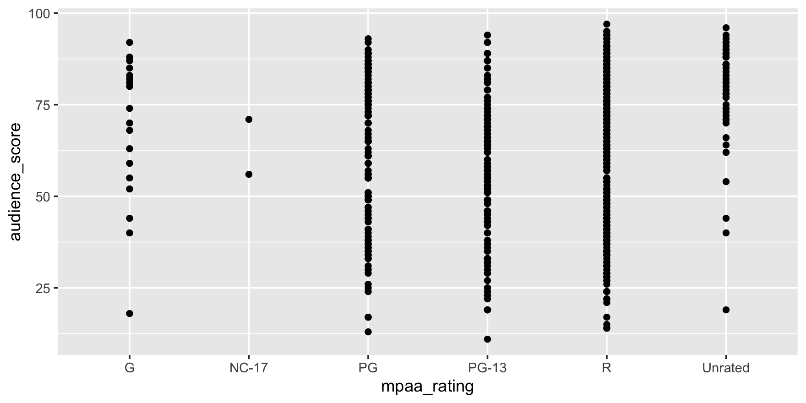
Points at the same rating stack in a single line. geom_jitter() adds a small random shift so they spread out:
ggplot(movies, aes(x = mpaa_rating, y = audience_score)) +
geom_jitter(width = 0.2, height = 0, alpha = 0.5)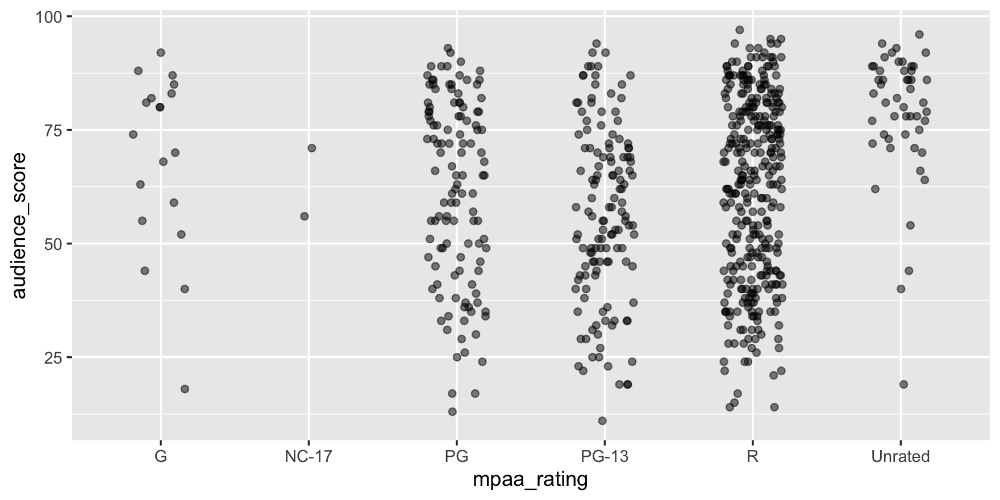
Jitter changes only the drawing, not the data. Keep height = 0 when the vertical value must stay exact.
4.6 Change over time: lines
movies |>
count(thtr_rel_year) |>
ggplot(aes(x = thtr_rel_year, y = n)) +
geom_line() +
geom_point()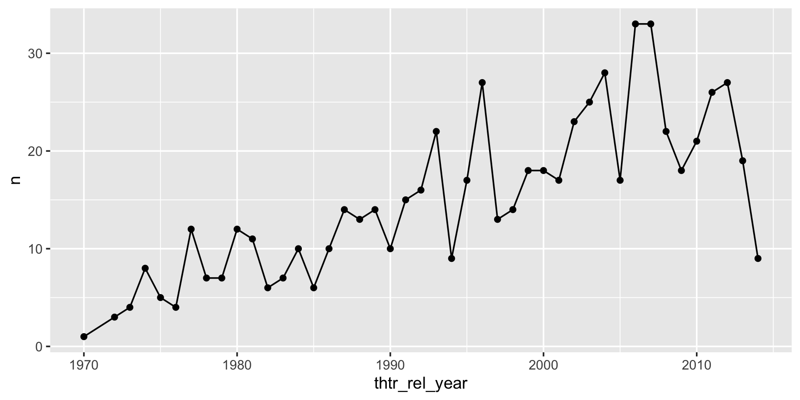
Summarize first, then plot the small table. With several lines in one plot, you need a group (or a color) so ggplot2 knows which points to connect:
movies |>
filter(genre %in% c("Drama", "Comedy")) |>
count(thtr_rel_year, genre) |>
ggplot(aes(x = thtr_rel_year, y = n, color = genre)) +
geom_line()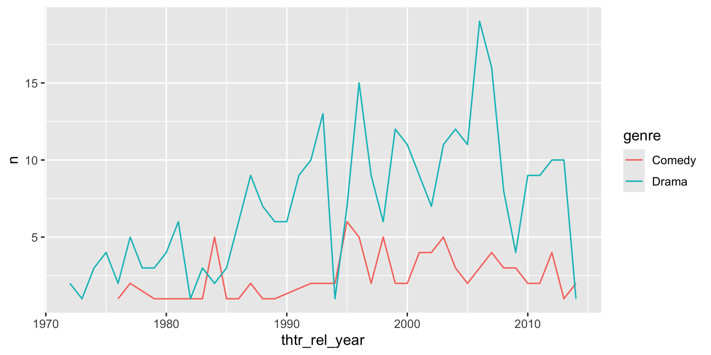
WarningAudit it: a line with no group
Without color or group, geom_line() would try to connect all points in x order into one zigzag line across both genres. If a line chart looks like a saw blade, the grouping is missing.
4.7 Facets: small multiples
Facets draw one panel per group, on the same scales. They are usually clearer than 11 colors.
movies |>
filter(genre %in% c("Drama", "Comedy", "Documentary", "Horror")) |>
ggplot(aes(x = imdb_rating, y = audience_score)) +
geom_point(alpha = 0.5) +
geom_smooth(method = "lm", se = FALSE) +
facet_wrap(~ genre)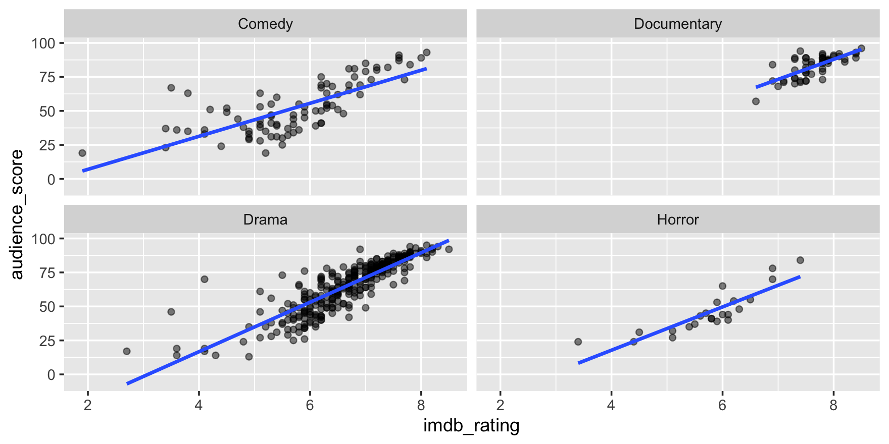
facet_wrap(~ genre)wraps panels into a grid.facet_grid(rows = vars(a), cols = vars(b))makes a grid from two variables.scales = "free"lets each panel have its own axes. That helps with different ranges, but it makes panels harder to compare, so use it knowingly.
5 Scales, labels, and themes
5.1 Labels
p +
labs(
title = "Audience scores track IMDB ratings",
subtitle = "651 movies released 1970 to 2014",
x = "IMDB rating (0 to 10)",
y = "Audience score (0 to 100)",
caption = "Source: movies.csv (IMDB and Rotten Tomatoes)"
)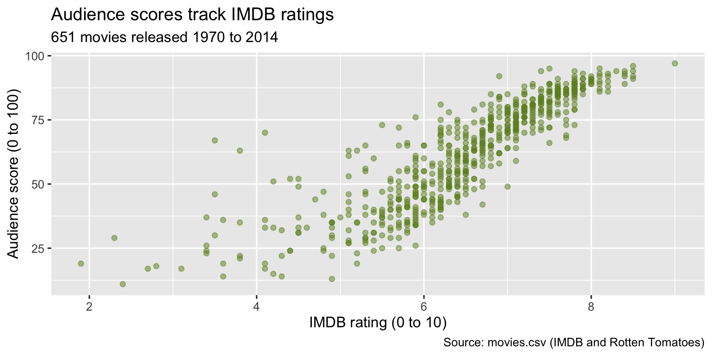
Good labels name the units and the source. Defaults such as imdb_num_votes are for you, not for your reader.
5.2 Position scales: breaks, limits, labels, logs
Position scales are named scale_x_*() and scale_y_*().
ggplot(movies, aes(x = imdb_num_votes, y = audience_score)) +
geom_point(alpha = 0.5, color = "#6d8d24") +
scale_x_log10(labels = scales::label_comma()) +
labs(x = "IMDB votes (log scale)", y = "Audience score")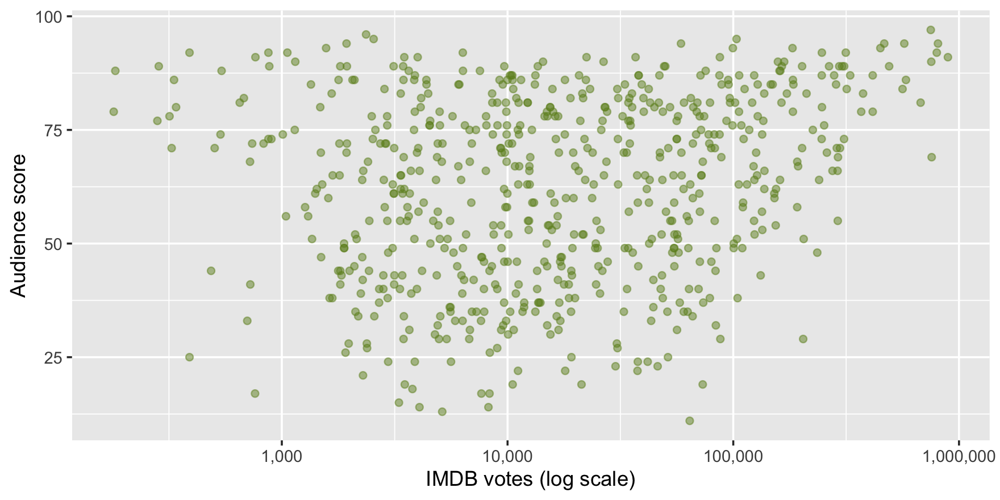
imdb_num_votes is heavily skewed: a few movies have hundreds of thousands of votes. On a log scale equal distances mean equal ratios, which spreads out the crowd. Always say when an axis is logged.
Useful label helpers from the scales package:
| Helper | Example result |
|---|---|
scales::label_comma() |
1,000,000 |
scales::label_percent() |
25% (for a proportion such as 0.25) |
scales::label_dollar() |
$1,500 |
movies |>
count(genre) |>
mutate(share = n / sum(n)) |>
ggplot(aes(x = share, y = fct_reorder(genre, share))) +
geom_col(fill = "#6d8d24") +
scale_x_continuous(labels = scales::label_percent()) +
labs(x = "Share of movies", y = NULL)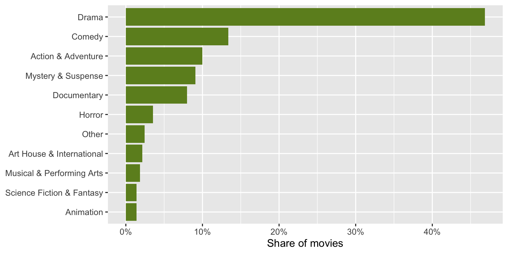
WarningAudit it: zooming with limits deletes data
ylim(), xlim(), and scale_*_continuous(limits = ...) remove data outside the range before anything is computed. coord_cartesian(xlim = , ylim = ) only zooms the view.
by_rating <- movies |>
summarize(avg = mean(audience_score), n = n(), .by = mpaa_rating)
ggplot(by_rating, aes(x = mpaa_rating, y = avg)) +
geom_col() +
ylim(60, 80)#> Warning: Removed 6 rows containing missing values or values outside the scale range
#> (`geom_col()`).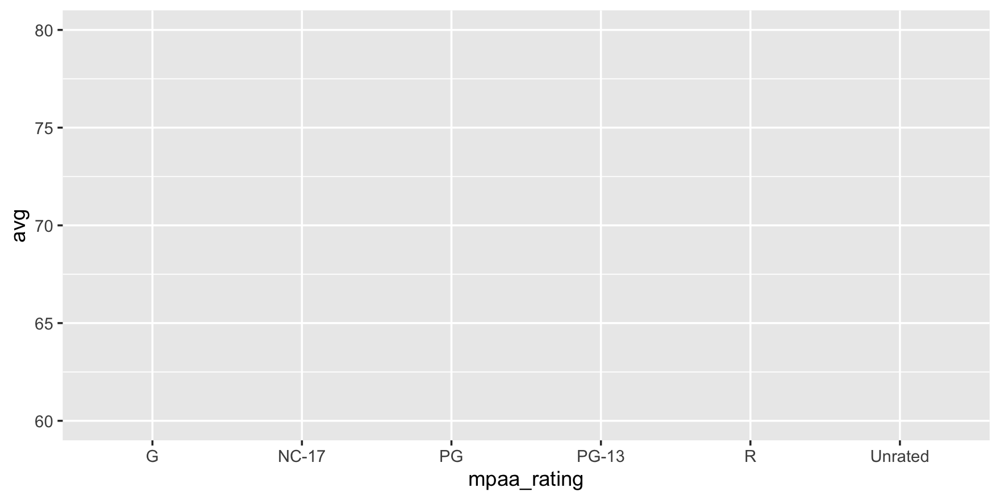
The warning says rows were removed. Bars below the limit vanish, and the rest are cut off. Reading a warning like this is part of the audit. If you really need to zoom, use coord_cartesian(), and even then think twice for bars (see Section 6.1).
5.3 Color scales
The default palette is fine for exploration, but it is not always readable for everyone. About 1 in 12 men and 1 in 200 women have some form of color vision deficiency, and red versus green is the most common confusion.
ggplot(movies, aes(x = imdb_rating, y = audience_score, color = mpaa_rating)) +
geom_point(alpha = 0.7) +
scale_color_viridis_d()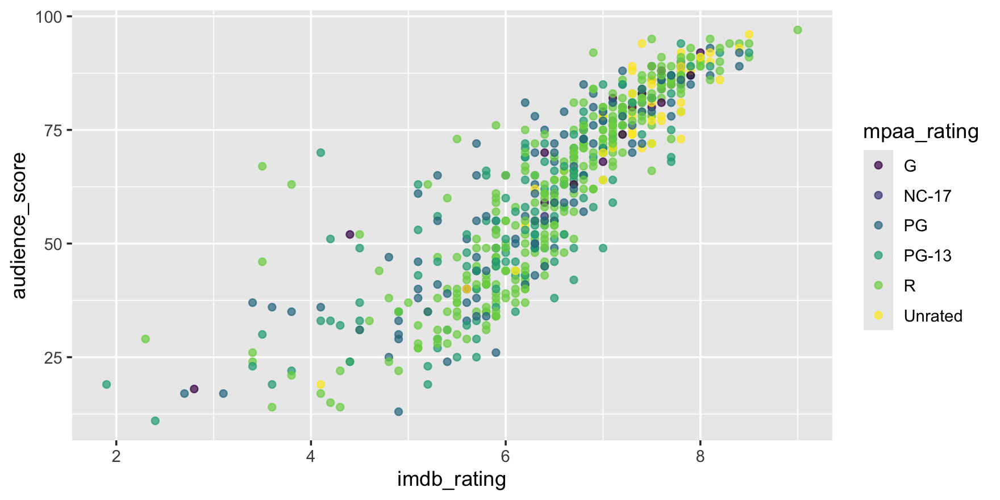
| Scale | Use for |
|---|---|
scale_color_viridis_d() / scale_fill_viridis_d() |
discrete categories; readable in grayscale and for most color-blind viewers |
scale_color_viridis_c() |
a continuous variable |
scale_color_brewer(palette = "Set2") |
discrete categories (ColorBrewer palettes) |
scale_color_manual(values = c(...)) |
colors you choose yourself |
A manual palette is easiest to control. These eight colors (the Okabe-Ito palette) were designed to be distinguishable by color-blind readers:
okabe_ito <- c("#E69F00", "#56B4E9", "#009E73", "#F0E442",
"#0072B2", "#D55E00", "#CC79A7", "#000000")
movies |>
filter(genre %in% c("Drama", "Comedy", "Documentary", "Horror")) |>
ggplot(aes(x = imdb_rating, y = audience_score, color = genre)) +
geom_point(alpha = 0.7) +
scale_color_manual(values = okabe_ito)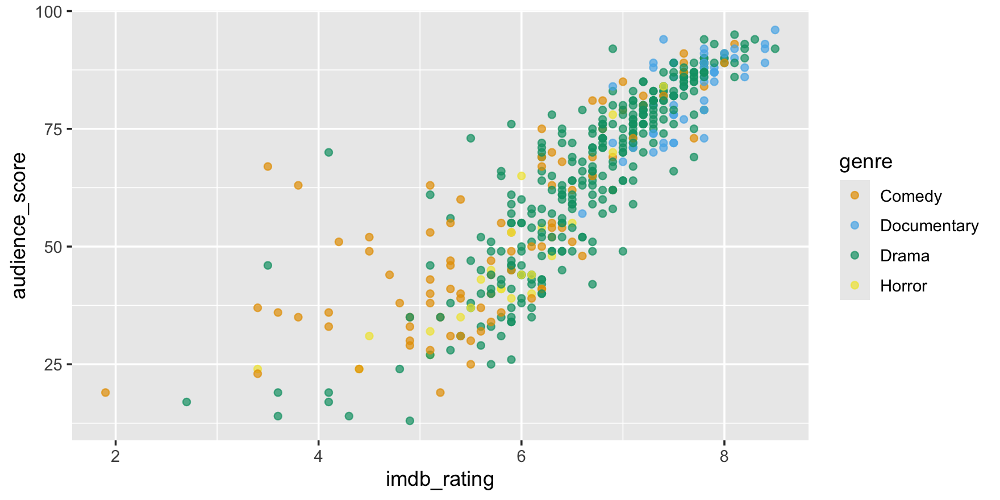
TipFewer colors, used on purpose
The strongest color design is often gray plus one accent: mute everything except the group you want the reader to see (see Section 8).
5.4 Legends
p2 + theme(legend.position = "bottom") # "top", "bottom", "left", "right", "none"
p2 + guides(color = guide_legend(title = "MPAA rating"))
p2 + labs(color = "MPAA rating") # the simplest way to rename a legendRemove a legend that adds nothing with legend.position = "none", for example when you have labeled the groups directly or in facet titles.
5.5 Themes and saving
A theme controls everything that is not data: background, gridlines, fonts.
p +
theme_minimal(base_size = 12) +
theme(legend.position = "bottom")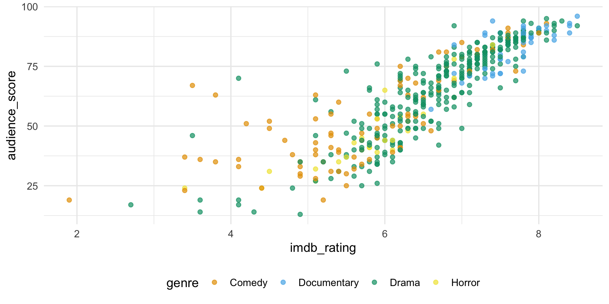
theme_minimal(), theme_bw(), and theme_classic() change the whole look. theme() adjusts individual details, for example theme(axis.text.x = element_text(angle = 45, hjust = 1)) for tilted labels. Use base_size to scale all text at once.
Save a plot with ggsave(). Set the size and resolution yourself:
ggsave("audience_vs_imdb.png", p, width = 8, height = 4.5, dpi = 300)In a Quarto document, set figure size per chunk with #| fig-width: 8 and #| fig-height: 4, and describe the figure for screen readers with #| fig-alt: "Scatter plot of ...".
6 Auditing plots: honest by design
An AI assistant optimizes for plotting code that runs. It does not know what you want to claim. The checks below catch the ways a correct plot can still mislead.
6.1 Truncated bar axes
A bar encodes its value by its length, so the baseline must be zero. Zooming a bar chart makes small differences look large.
ggplot(by_rating, aes(x = mpaa_rating, y = avg)) +
geom_col() +
coord_cartesian(ylim = c(50, 80))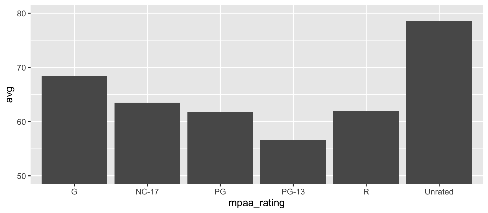
Here “Unrated” looks several times taller than “PG-13”, although 78.5 versus 56.7 is a ratio of about 1.4. There are three more problems: the order is alphabetical, nothing shows that NC-17 is the average of only 2 movies, and the label avg means nothing to a reader.
An honest version starts at zero, sorts by value, shows n, and labels the axes:
ggplot(by_rating, aes(x = avg, y = fct_reorder(mpaa_rating, avg))) +
geom_col(fill = "#6d8d24") +
geom_text(aes(label = paste0("n = ", n)), hjust = -0.1) +
scale_x_continuous(limits = c(0, 100)) +
labs(x = "Average audience score (0 to 100)", y = NULL,
title = "Average audience score by MPAA rating")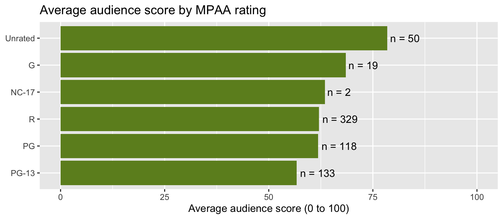
NotePoints do not need a zero baseline
The zero-baseline rule is for bars. A dot or line chart encodes value by position, so zooming to the range of the data is fine, as long as the axis labels make it visible.
6.2 Averages without sizes
A mean of 2 values and a mean of 300 values look identical in a bar. Always show or mention n, as above. For skewed data, a boxplot or the individual points (Section 4.2) say more than a mean.
6.3 Bin width changes the story
ggplot(movies, aes(x = audience_score)) +
geom_histogram(binwidth = 25, fill = "#6d8d24", color = "white")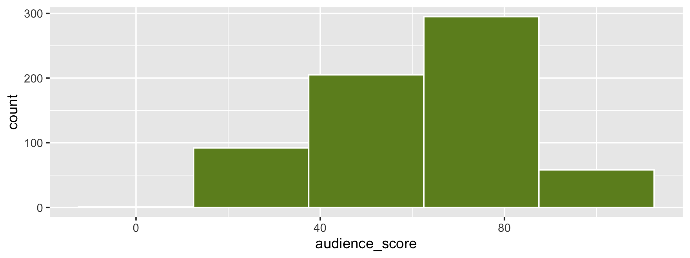
ggplot(movies, aes(x = audience_score)) +
geom_histogram(binwidth = 2, fill = "#6d8d24", color = "white")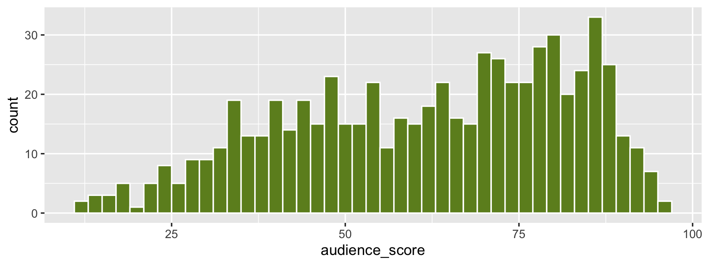
Wide bins hide the shape; very narrow bins add noise. Try several widths (or a density plot) before choosing one, and never choose a width because it makes your claim look better.
6.4 Other things to look for
| Problem | What to check |
|---|---|
| Dual y axes | Two series on separate axes can be made to look correlated by choosing the scales. ggplot2 makes this hard on purpose (sec.axis only supports a transformation of one axis). Be suspicious when an AI produces one. |
| Too many colors | More than about 5 categories force the reader to match dots to a legend. Facet, or highlight one group. |
| 3D and pie charts | Angles and areas are read poorly. A sorted bar chart is almost always better. |
| Area and size encodings | Doubling a radius quadruples the area. Prefer position. |
| Log axes | Is it labeled? Can your reader read it? |
| Cherry-picked range | Does the x range exclude inconvenient years? |
| Missing context | Units, date range, source, and sample size |
TipChart audit checklist
- Axis: do bars start at zero? Is a zoom or log scale stated?
- Size: is
nvisible for averages and proportions? - Order: is the order meaningful, not alphabetical?
- Color: few colors, color-blind safe, used for a reason?
- Labels: title says something, units, source?
- Warnings: did R remove rows or drop values? Read every warning.
7 Plots as diagnostics
Before modeling or reporting, plots can find problems in the data. These plots are for you, not your reader, so they do not need to be pretty. They need to be fast, and they need to show something unexpected.
7.1 Distributions: outliers and impossible values
ggplot(movies, aes(x = runtime)) +
geom_histogram(binwidth = 10, fill = "#6d8d24", color = "white")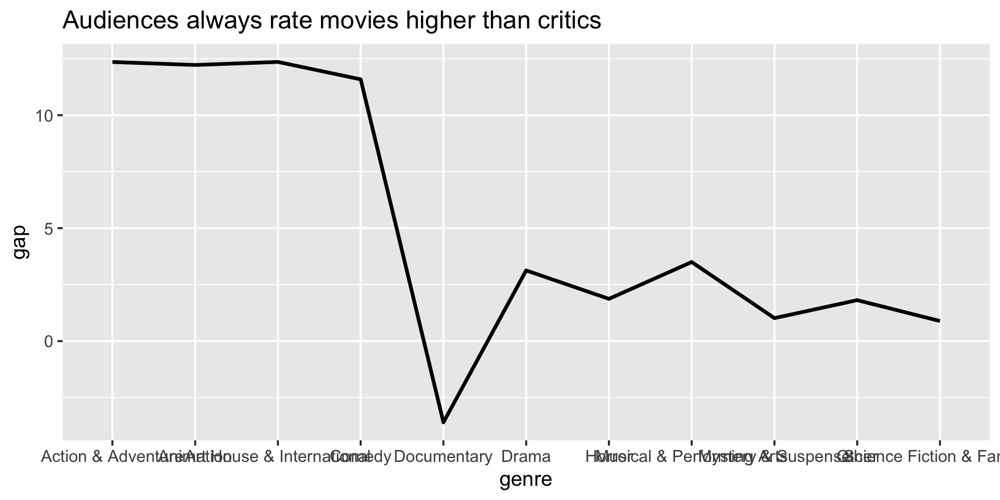
A single bar sits far to the right. Find it:
movies |>
slice_max(runtime, n = 3) |>
select(title, runtime, genre)#> # A tibble: 3 x 3
#> title runtime genre
#> <chr> <dbl> <chr>
#> 1 Hotel Terminus: The Life and Times of Klaus Barbie 267 Documentary
#> 2 The Godfather, Part II 202 Mystery & Suspense
#> 3 Titanic 194 DramaA 267-minute documentary (the 1988 film Hotel Terminus) is unusual but real. A plot flags a value; you decide whether it is an error, an outlier worth keeping, or a different kind of observation. Deleting it just because the plot looks better would be its own kind of dishonesty.
7.2 Missing data: how much, and where?
Count the missing values per column (Session 2 tools), then plot the counts:
missing_by_col <- movies |>
summarize(across(everything(), ~ sum(is.na(.x)))) |>
pivot_longer(everything(), names_to = "column", values_to = "n_missing") |>
filter(n_missing > 0)
ggplot(missing_by_col, aes(x = n_missing, y = fct_reorder(column, n_missing))) +
geom_col(fill = "#6d8d24") +
labs(x = "Missing values", y = NULL)
The three dvd_rel_* columns have the same count (8). That suggests they are missing for the same films. A tile plot of where the missing values are confirms it:
movies |>
mutate(row = row_number()) |>
select(row, studio, dvd_rel_year, dvd_rel_month, dvd_rel_day, actor5) |>
mutate(across(-row, is.na)) |>
pivot_longer(-row, names_to = "column", values_to = "is_missing") |>
ggplot(aes(x = column, y = row, fill = is_missing)) +
geom_tile() +
scale_fill_manual(values = c("grey90", "#f68b1f"), labels = c("present", "missing")) +
scale_y_reverse() +
labs(x = NULL, y = "Row number", fill = NULL)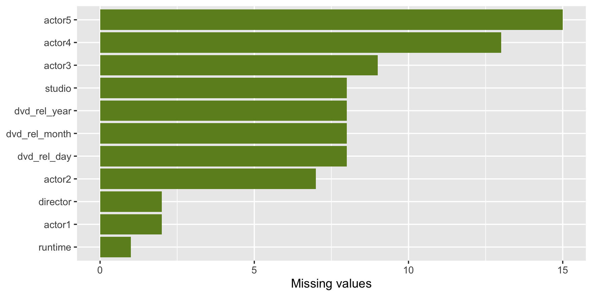
The orange stripes in the three dvd_rel_* columns line up. Missingness that lines up usually has one cause (here, perhaps films never released on DVD). Missingness is a clue to understand, not just a nuisance to fix. The packages naniar and visdat produce ready-made versions of these plots (Appendix B).
7.3 Missing for whom? Subgroup comparison
Is missingness spread evenly across groups?
movies |>
summarize(n = n(), n_no_dvd = sum(is.na(dvd_rel_year)),
pct_no_dvd = mean(is.na(dvd_rel_year)), .by = title_type)#> # A tibble: 3 x 4
#> title_type n n_no_dvd pct_no_dvd
#> <chr> <int> <int> <dbl>
#> 1 Feature Film 591 6 0.0102
#> 2 Documentary 55 2 0.0364
#> 3 TV Movie 5 0 0movies |>
summarize(pct_no_dvd = mean(is.na(dvd_rel_year)), n = n(), .by = title_type) |>
ggplot(aes(x = pct_no_dvd, y = title_type)) +
geom_col(fill = "#6d8d24") +
geom_text(aes(label = paste0("n = ", n)), hjust = -0.1) +
scale_x_continuous(labels = scales::label_percent(), limits = c(0, 0.2)) +
labs(x = "Share with no DVD release year", y = NULL)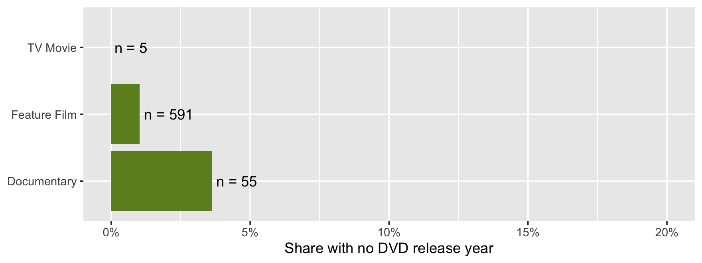
With only 5 TV movies (and none missing), 55 documentaries (2 missing), and 591 feature films (6 missing), the percentages are small and based on very few cases. Always read a percentage together with its n.
7.4 Relationships: does the data agree with itself?
Two columns that should agree can be checked with a scatter plot and a reference line:
ggplot(movies, aes(x = critics_score, y = audience_score)) +
geom_point(alpha = 0.5) +
geom_abline(slope = 1, intercept = 0, color = "#f68b1f") +
labs(x = "Critics score", y = "Audience score")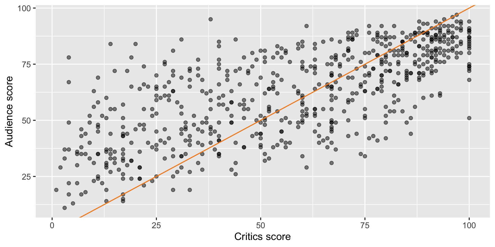
Points above the orange line are movies audiences rated higher than critics did. Most of the cloud sits above or near it, so audiences are on average a little more generous. Unexpected structure, such as a hard edge or a vertical stripe, would suggest a data entry or coding issue.
8 From chart to message
An exploratory plot helps you find something. An explanatory plot tells someone else what you found. The same data can be both, and the difference is design.
8.1 An example, step by step
The question: do critics and audiences rate genres differently? First the numbers:
gap <- movies |>
summarize(critics = mean(critics_score), audience = mean(audience_score), .by = genre) |>
mutate(gap = audience - critics)
gap |> arrange(desc(gap))#> # A tibble: 11 x 4
#> genre critics audience gap
#> <chr> <dbl> <dbl> <dbl>
#> 1 Art House & International 51.6 64 12.4
#> 2 Action & Adventure 41.4 53.8 12.4
#> 3 Animation 50.2 62.4 12.2
#> 4 Comedy 40.9 52.5 11.6
#> 5 Musical & Performing Arts 76.7 80.2 3.5
#> 6 Drama 62.2 65.3 3.13
#> # i 5 more rowsVersion 1: the default. It shows the data, but the reader has to do all the work.
gap |>
pivot_longer(c(critics, audience), names_to = "source", values_to = "score") |>
ggplot(aes(x = score, y = genre, color = source)) +
geom_point(size = 3)
Version 2: sort by the finding. Connect each pair with a segment so the gap is the visible object.
ggplot(gap, aes(y = fct_reorder(genre, gap))) +
geom_segment(aes(x = critics, xend = audience, yend = genre), color = "grey75", linewidth = 1.5) +
geom_point(aes(x = critics), color = "grey40", size = 3) +
geom_point(aes(x = audience), color = "#213921", size = 3) +
labs(x = "Average score", y = NULL)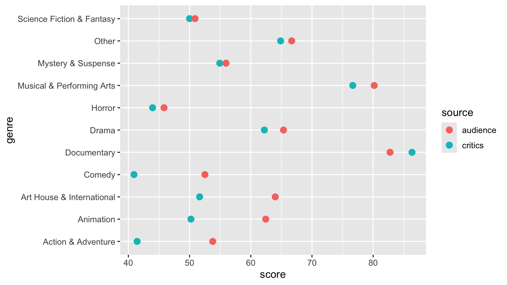
Version 3: highlight the finding and say it in the title.
gap |>
mutate(big = gap > 10) |>
ggplot(aes(y = fct_reorder(genre, gap))) +
geom_segment(aes(x = critics, xend = audience, yend = genre, color = big),
linewidth = 1.5) +
geom_point(aes(x = critics), color = "grey40", size = 3) +
geom_point(aes(x = audience), color = "#213921", size = 3) +
scale_color_manual(values = c("grey80", "#f68b1f"), guide = "none") +
labs(title = "Critics score four genres about 12 points below audiences",
subtitle = "Grey dot: critics. Dark green dot: audience. Gaps over 10 points in orange.",
x = "Average score (0 to 100)", y = NULL,
caption = "Source: movies.csv, 651 movies (IMDB and Rotten Tomatoes)") +
theme_minimal(base_size = 12)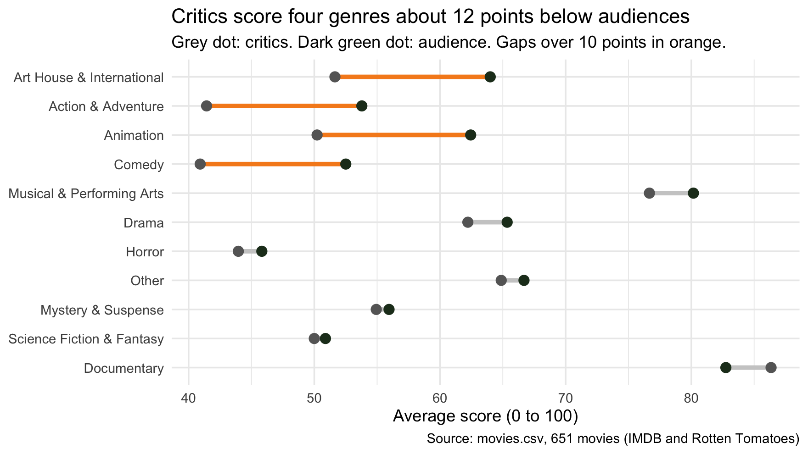
What changed: the title states the finding, one color carries the message, the order follows the gap, and the legend became a one-line subtitle. No data was altered.
TipChecklist for a plot that makes a point
- Title = finding, in a sentence (not “Critics vs audience by genre”).
- One highlight; mute everything else.
- Sort by what matters.
- Label directly when you can, instead of using a legend.
- Remove clutter: extra gridlines, borders, redundant legends.
- Context: units, source, and the sample size.
- Accessibility: color-blind safe, large enough text, alt text.
WarningAudit it: a headline the data cannot support
An AI may write a confident title such as “Critics hate comedies.” The plot shows an average difference of about 12 points across 87 comedies. It does not show that critics “hate” anything, or why they differ. Check that your title claims no more than the plot shows. Be careful with causal words (because, drives, leads to) in a title.
8.2 Annotations and direct labels
annotate() adds a note at a position in data coordinates. geom_text() labels points from a column.
movies |>
count(thtr_rel_year) |>
ggplot(aes(x = thtr_rel_year, y = n)) +
geom_line(color = "grey50") +
geom_point(data = ~ slice_max(.x, n, n = 1, with_ties = FALSE), color = "#f68b1f", size = 3) +
annotate("text", x = 2006, y = 35.5, label = "Peak: 33 movies in 2006 (and 2007)", hjust = 1) +
labs(title = "Movies in the sample per release year", x = NULL, y = "Movies")
The highlighted point uses a function as the data for one layer (data = ~ slice_max(.x, n, n = 1)), so the label stays correct if the data changes. For many labels that would overlap, the ggrepel package (Appendix B) places them for you.
9 Practice problems
Problem 1: Mapping or setting? An AI wrote the code below to make “dark green” points. What is wrong, and how do you fix it?
ggplot(movies, aes(x = critics_score, y = audience_score)) +
geom_point(aes(color = "darkgreen"), alpha = 0.5)
NoteSolution 1
"darkgreen" is inside aes(), so it is treated as a category label, not a color. The points get the default salmon color and a legend entry named darkgreen. Move the color outside aes():
ggplot(movies, aes(x = critics_score, y = audience_score)) +
geom_point(color = "darkgreen", alpha = 0.5)
Problem 2: Pick the geom. Show how imdb_rating differs across mpaa_rating. Sort the categories by median rating, show every movie, and make it obvious that some ratings have very few movies.
NoteSolution 2
ggplot(movies, aes(x = imdb_rating, y = fct_reorder(mpaa_rating, imdb_rating))) +
geom_boxplot(outlier.shape = NA) +
geom_jitter(height = 0.2, alpha = 0.4) +
labs(x = "IMDB rating", y = NULL)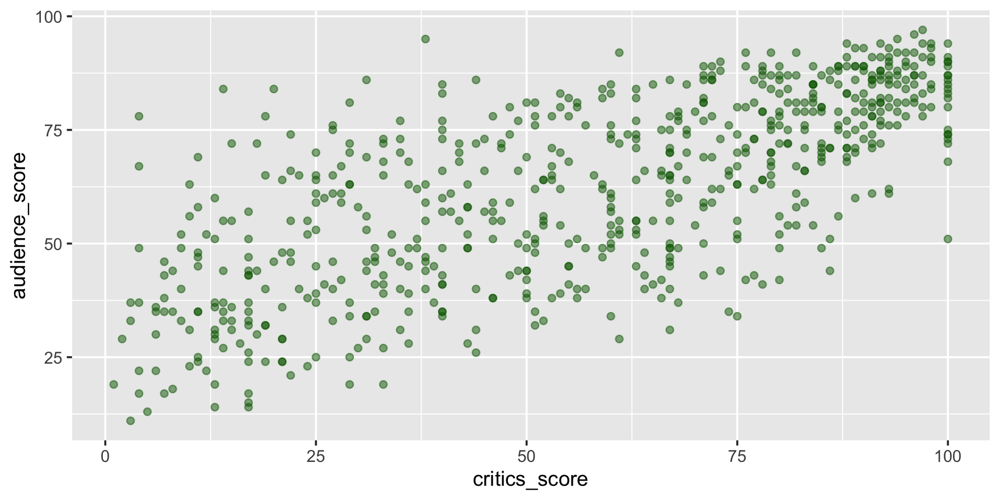
The jittered points make the tiny NC-17 group (2 movies) and the small G group (19) visible. You could add n to the axis labels as a further step.
Problem 3: Fix the lying plot. An AI produced this plot of average critics_score by genre. List at least three problems, then rebuild it honestly.
by_genre <- movies |> summarize(avg = mean(critics_score), .by = genre)
ggplot(by_genre, aes(genre, avg)) +
geom_col() +
coord_cartesian(ylim = c(35, 90))
NoteSolution 3
Problems: the y axis starts at 35 (truncated bars), the genres are in alphabetical order, there is no n (Animation and Science Fiction & Fantasy have only 9 movies each), long x labels will overlap, and the axis label is the column name avg.
by_genre <- movies |>
summarize(avg = mean(critics_score), n = n(), .by = genre)
ggplot(by_genre, aes(x = avg, y = fct_reorder(genre, avg))) +
geom_col(fill = "#6d8d24") +
geom_text(aes(label = paste0("n = ", n)), hjust = -0.1) +
scale_x_continuous(limits = c(0, 100)) +
labs(x = "Average critics score (0 to 100)", y = NULL)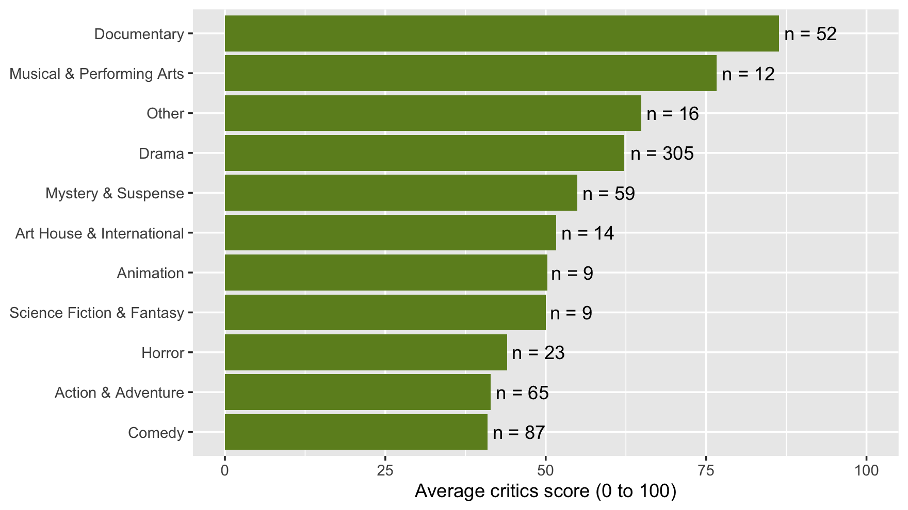
Problem 4: Facets. For the four most common genres, show the relationship between critics_score (x) and audience_score (y) with a straight trend line in each panel. Is the relationship similar across genres?
NoteSolution 4
top4 <- movies |> count(genre, sort = TRUE) |> slice_head(n = 4) |> pull(genre)
movies |>
filter(genre %in% top4) |>
ggplot(aes(x = critics_score, y = audience_score)) +
geom_point(alpha = 0.4) +
geom_smooth(method = "lm", se = FALSE, color = "#f68b1f") +
facet_wrap(~ genre)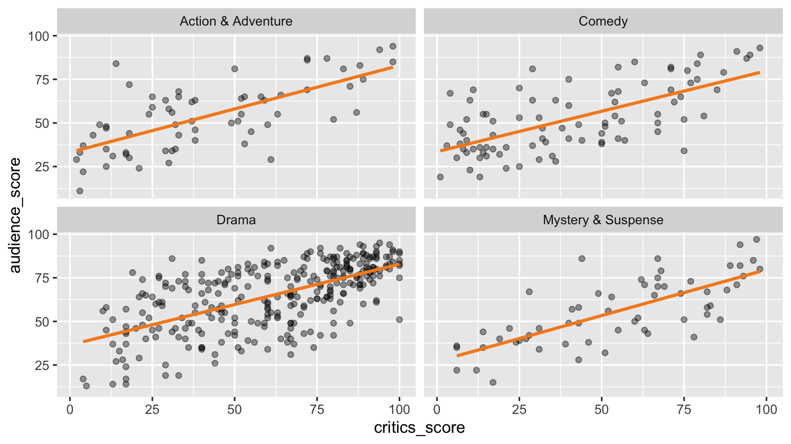
The slopes look broadly similar: a higher critics score goes with a higher audience score in every genre. The plot shows association in these 651 movies, nothing about cause.
Problem 5: Missingness. Make a bar chart of the percentage of missing values in each column that has any, sorted from largest to smallest, with percentage labels on the axis. In one sentence, which column is the worst, and how large is the problem?
NoteSolution 5
movies |>
summarize(across(everything(), ~ mean(is.na(.x)))) |>
pivot_longer(everything(), names_to = "column", values_to = "pct_missing") |>
filter(pct_missing > 0) |>
ggplot(aes(x = pct_missing, y = fct_reorder(column, pct_missing))) +
geom_col(fill = "#6d8d24") +
scale_x_continuous(labels = scales::label_percent(accuracy = 0.1)) +
labs(x = "Missing", y = NULL)
actor5 is the worst, but only about 2.3% of its values (15 of 651) are missing, so none of these columns has a large missing-data problem.
Problem 6: Make a point. Best Picture nominees (best_pic_nom == "yes") are a small group. Make one plot that compares their audience scores with those of non-nominees, states a finding in its title, and makes the group sizes visible. Then say in a sentence what the plot does not show.
NoteSolution 6
movies |>
mutate(group = if_else(best_pic_nom == "yes", "Best Picture nominees", "All other movies")) |>
mutate(group = paste0(group, " (n = ", n(), ")"), .by = group) |>
ggplot(aes(x = audience_score, y = group)) +
geom_boxplot(outlier.shape = NA, fill = "grey90") +
geom_jitter(aes(color = group), height = 0.15, alpha = 0.5, show.legend = FALSE) +
scale_color_manual(values = c("grey50", "#f68b1f")) +
labs(title = "Best Picture nominees have much higher audience scores",
x = "Audience score (0 to 100)", y = NULL)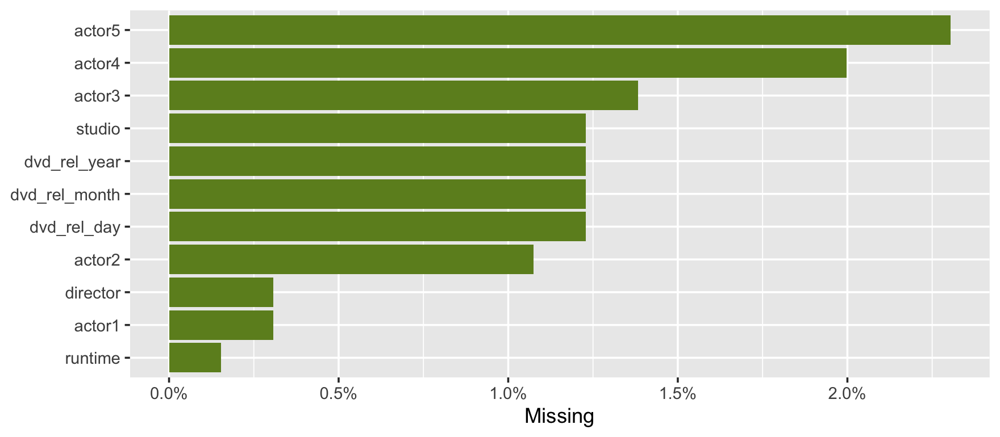
The plot shows that nominees score higher on average (about 85 versus about 62) in this sample of 22 versus 629 movies. It does not show why: nominees may differ in budget, genre, or marketing, and audiences may have been influenced by the nomination itself.
10 Appendix A: Older ggplot2 code you may still see
AI assistants trained on older code still produce these. Many still run but print a deprecation message. Version details differ, so read the message that your version prints.
| Older code | Current approach |
|---|---|
qplot(x, y, data = df) |
ggplot(df, aes(x, y)) + geom_point() |
aes_string("col") |
aes(.data[["col"]]) or aes(x = {{ var }}) in functions |
geom_line(size = 1) |
geom_line(linewidth = 1) (size is for points and text) |
aes(y = ..count..) |
aes(y = after_stat(count)) |
geom_bar(stat = "identity") |
geom_col() |
theme(legend.position = c(0.9, 0.2)) |
theme(legend.position = "inside", legend.position.inside = c(0.9, 0.2)) in recent versions |
scale_x_continuous(trans = "log10") |
scale_x_continuous(transform = "log10") in recent versions, or scale_x_log10() |
gather(), spread() before plotting |
pivot_longer(), pivot_wider() |
11 Appendix B: Helpful add-on packages
These are optional and are not installed with tidyverse. Install once with install.packages("name"). The code below is shown but not run in this handout.
# ggrepel: labels that do not overlap
library(ggrepel)
ggplot(gap, aes(x = critics, y = audience, label = genre)) +
geom_point() +
geom_text_repel()
# patchwork: combine plots
library(patchwork)
p1 <- ggplot(movies, aes(audience_score)) + geom_histogram(binwidth = 5)
p2 <- ggplot(movies, aes(critics_score)) + geom_histogram(binwidth = 5)
p1 + p2 # side by side
p1 / p2 # stacked
# naniar and visdat: ready-made missing-data plots
library(naniar)
gg_miss_var(movies) # missing values per column
vis_miss(movies) # every cell: present or missing12 Appendix C: Quick reference
# The template
ggplot(data, aes(x = xvar, y = yvar, color = groupvar)) + # data and mappings
geom_point(alpha = 0.5, size = 2) + # geom; fixed settings OUTSIDE aes()
facet_wrap(~ panelvar) + # small multiples
scale_x_log10(labels = scales::label_comma()) + # scales
scale_color_viridis_d() +
labs(title = "State the finding", x = "...", y = "...", # labels
caption = "Source: ...") +
theme_minimal() # theme
# Order categories
fct_reorder(genre, value) # by another variable (median by default)
fct_infreq(genre) # by frequency
fct_rev(genre) # reverse the order
# Bars
geom_bar() # counts rows
geom_col() # uses a column of heights
# Zoom vs delete
coord_cartesian(ylim = c(a, b)) # zoom only
ylim(a, b) # removes data outside the range
# Save
ggsave("name.png", plot, width = 8, height = 4.5, dpi = 300)